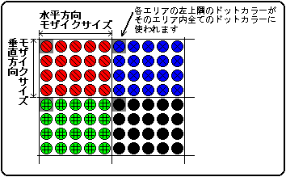

★
HARDWARE Manual★
VDP2ユーザーズマニュアル★
第４章 スクロール画面
★
HARDWARE Manual★
VDP2ユーザーズマニュアル★
第４章 スクロール画面
▲
戻る｜
進む▼
VDP2ユーザーズマニュアル/第４章 スクロール画面
■4.11 モザイク処理
- スクロール面はモザイク処理を画面ごとに行うことができ、そのときのモザイクサイズは水平方向と垂直方向それぞれについて設定できます。
モザイク処理は、各スクロール画面を、指定されたサイズのいくつかのエリアに分割し、それぞれのエリアの左上のドットのカラーをそのエリア内のすべてのドットに表示する機能です。異なるカラーのエリアを並べることでモザイクパターンが得られます。モザイクエリアのサイズは、水平方向と垂直方向を独立に指定することができます。水平方向のサイズは、1ドット単位で1〜16ドットまで指定できます。垂直方向のサイズは、ノンインタレースモードでは1ドット単位で1〜16ドットまで、インタレースモードでは2ドット単位で2〜32ドットまでを指定することができます。倍密インタレースモードのときにモザイク処理を行うようにレジスタを設定すると、画面は強制的に単密インタレースモードで表示されます。
NBG0またはNBG1においてモザイク処理を行うと、縦セルスクロール機能が使えなくなります。また、RBG0、RBG1のモザイク処理は、水平方向にしかできません。
モザイクパターンを図4.19に示します。
図4.19 モザイクパターン

●モザイクコントロールレジスタ
- モザイクコントロールレジスタは、モザイク処理を行うかどうかを指定します。書き込み専用の16ビットのレジスタで、180022H番地にあります。電源投入後またはリセット後、値は0にクリアされますので必ず設定してください。
- MZCTL 180022H
- モザイクサイズビット：Mosaic size bit (MZSZV3〜MZSZV0, MZSZH3〜MZSZH0)
- 水平方向と垂直方向のモザイクサイズを指定します。
| MZSZV3〜MZSZV0 | 180022H | ビット15〜12 | 垂直方向モザイクサイズ用 |
| MZSZH3〜MZSZH0 | 180022H | ビット11〜8 | 水平方向モザイクサイズ用 |
| MZSZV3 | MZSZV2 | MZSZV1 | MZSZV0 | 垂直方向モザイクサイズ |
|---|
| ノンインタレース | インタレース |
|---|
0 | 0 | 0 | 0 | 1ドット | 2ドット |
|---|
0 | 0 | 0 | 1 | 2ドット | 4ドット |
|---|
0 | 0 | 1 | 0 | 3ドット | 6ドット |
|---|
0 | 0 | 1 | 1 | 4ドット | 8ドット |
|---|
0 | 1 | 0 | 0 | 5ドット | 10ドット |
|---|
0 | 1 | 0 | 1 | 6ドット | 12ドット |
|---|
0 | 1 | 1 | 0 | 7ドット | 14ドット |
|---|
0 | 1 | 1 | 1 | 8ドット | 16ドット |
|---|
1 | 0 | 0 | 0 | 9ドット | 18ドット |
|---|
1 | 0 | 0 | 1 | 10ドット | 20ドット |
|---|
1 | 0 | 1 | 0 | 11ドット | 22ドット |
|---|
1 | 0 | 1 | 1 | 12ドット | 24ドット |
|---|
1 | 1 | 0 | 0 | 13ドット | 26ドット |
|---|
1 | 1 | 0 | 1 | 14ドット | 28ドット |
|---|
1 | 1 | 1 | 0 | 15ドット | 30ドット |
|---|
1 | 1 | 1 | 1 | 16ドット | 32ドット |
|---|
| MZSZH3 | MZSZH2 | MZSZH1 | MZSZH0 | 水平方向モザイクサイズ |
0 | 0 | 0 | 0 | 1ドット |
|---|
0 | 0 | 0 | 1 | 2ドット |
|---|
0 | 0 | 1 | 0 | 3ドット |
|---|
0 | 0 | 1 | 1 | 4ドット |
|---|
0 | 1 | 0 | 0 | 5ドット |
|---|
0 | 1 | 0 | 1 | 6ドット |
|---|
0 | 1 | 1 | 0 | 7ドット |
|---|
0 | 1 | 1 | 1 | 8ドット |
|---|
1 | 0 | 0 | 0 | 9ドット |
|---|
1 | 0 | 0 | 1 | 10ドット |
|---|
1 | 0 | 1 | 0 | 11ドット |
|---|
1 | 0 | 1 | 1 | 12ドット |
|---|
1 | 1 | 0 | 0 | 13ドット |
|---|
1 | 1 | 0 | 1 | 14ドット |
|---|
1 | 1 | 1 | 0 | 15ドット |
|---|
1 | 1 | 1 | 1 | 16ドット |
|---|
- [注]インタレースの設定には関係ありません。
- モザイクイネーブルビット：Mosaic enable bit (N0MZE, N1MZE, N2MZE, N3MZE, R0MZE)
- モザイク処理を行う画面を指定します。
| N0MZE | 180022H | ビット0 | NBG0用（またはRBG1用） |
| N1MZE | 180022H | ビット1 | NBG1用 |
| N2MZE | 180022H | ビット2 | NBG2用 |
| N3MZE | 180022H | ビット3 | NBG3用 |
| R0MZE | 180022H | ビット4 | RBG0用 |
| xxMZE | 処理 |
0 | モザイク処理を行いません |
|---|
1 | モザイク処理を行います |
|---|
- [注]ビット名のxxには、N0、N1、N2、N3、またはR0が入ります。
- 回転スクロール面をモザイク処理する場合は、水平方向のモザイク処理しか行われません。
倍密インタレースモードの場合にモザイク処理を行うと、画面は強制的に単密インタレースモードで表示されます。
NBG0またはNBG1においてモザイク処理を行うと、モザイク処理した画面は縦セルスクロール機能が使用できなくなります。したがって、そのときの表示画面は、縦セルスクロールをしない場合の画面に対してモザイク処理を行ったものになります。
▲
戻る｜
進む▼
★HARDWARE Manual
VDP2ユーザーズマニュアル★
第４章 スクロール画面
Copyright SEGA ENTERPRISES, LTD., 1997